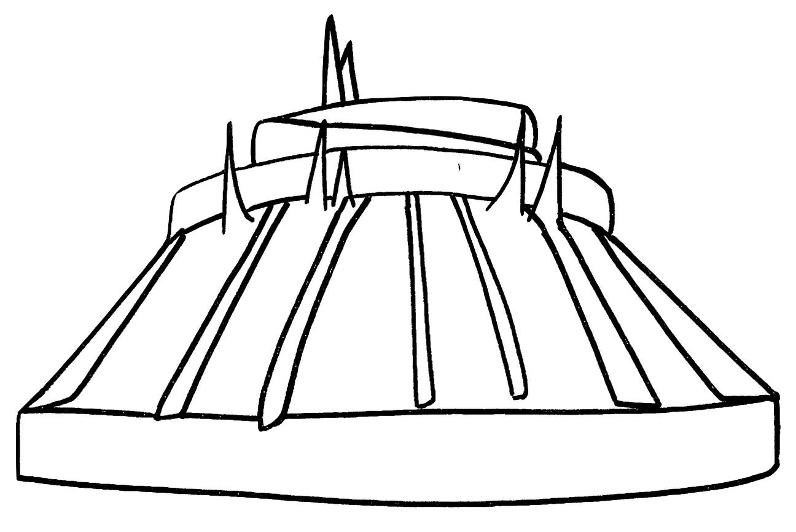

Space Mountain: 1 Death
On August 14, 1979, a 31-year-old woman became ill after riding Space Mountain. At the unload area, she was unable to exit the vehicle. Although employees told her to stay seated while the vehicle was removed from the track, other ride operators did not realize that her vehicle was supposed to be removed and accidentally sent her through the ride a second time. She arrived at the unloading zone semi-conscious. The victim was subsequently taken to Palm Harbor Hospital where she remained in a coma and died one week later. The coroner's report attributed the death to natural causes: a heart tumor had dislodged and entered her brain. A subsequent lawsuit against the park was dismissed.
